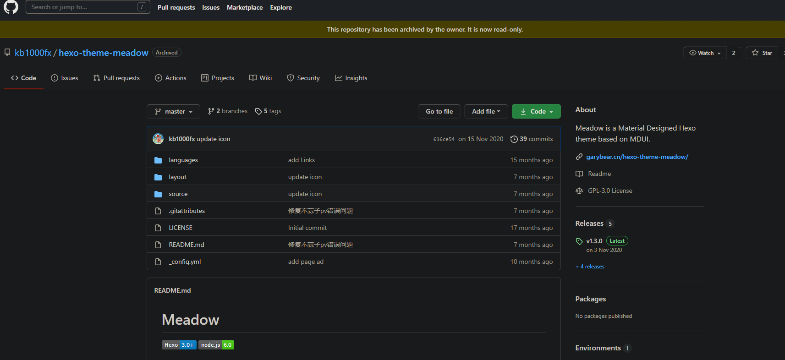

初始主题说实话真是不大行，有必要更换一套主题，提升下整体逼格。
寻找主题的途径有许多，使用常用搜索引擎搜索就能让你眼花缭乱
好在Hexo很人性化，提供官方的主题网站供我们选择。
站内主题数量还是比较客观的，网上教程大部分推荐的都是Next主题，但是像我有明确的目标，我想要的主题是MD风格的，那么就可以在搜索栏进行关键字搜索。
在搜索结果点击预览图可以直接进入主题的demo中查看，通过一番比较，最终我选择了Meadow这款主题，接下来的安装也以此主题为基础。
在搜索页点击预览图下的文字就可以进入主题的github主页（可能需要科学上网）：

点击code查看主题链接并复制：
将主题clone到hexo项目文件夹下themes文件夹下，指令如下：
通过此条指令会在themes下自动生成meadow文件夹，并将主题内容clone到文件夹内：
这样主题算安装完成了。
主题安装后通过简单配置就可以使用了。
打开项目根目录配置文件_config.yml，找到下图位置，并修改成主题文件夹的名称保存并关闭：
在根目录打开git bath，依次输入以下指令更新项目：
hexo clean
hexo clean
更新编译完成可以开启本地服务：
hexo s
或者直接部署到GitHub上：
hexo deploy
更换皮肤效果如下：
关于hexo个性化配置以及主题配置后续再进行讲解。